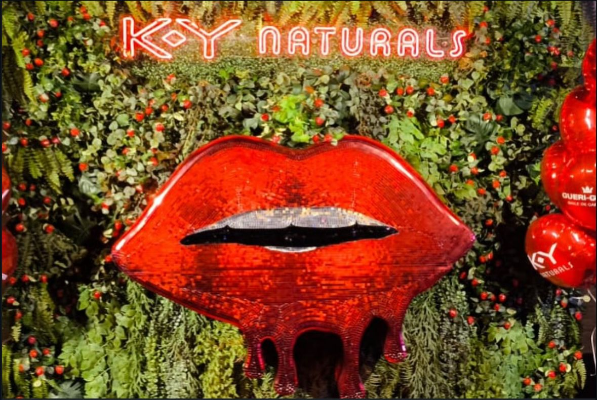
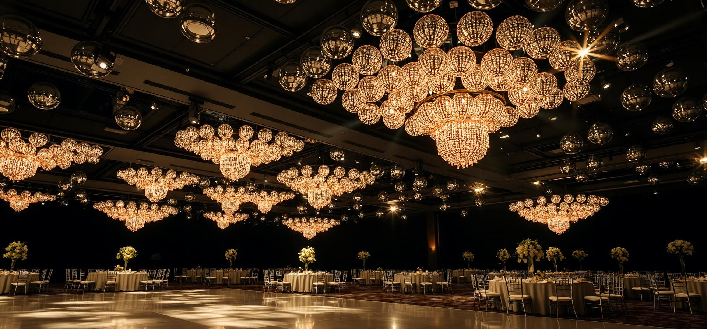
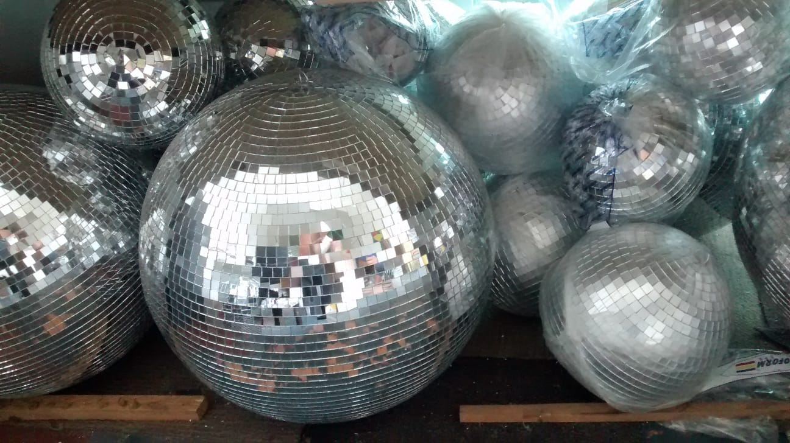
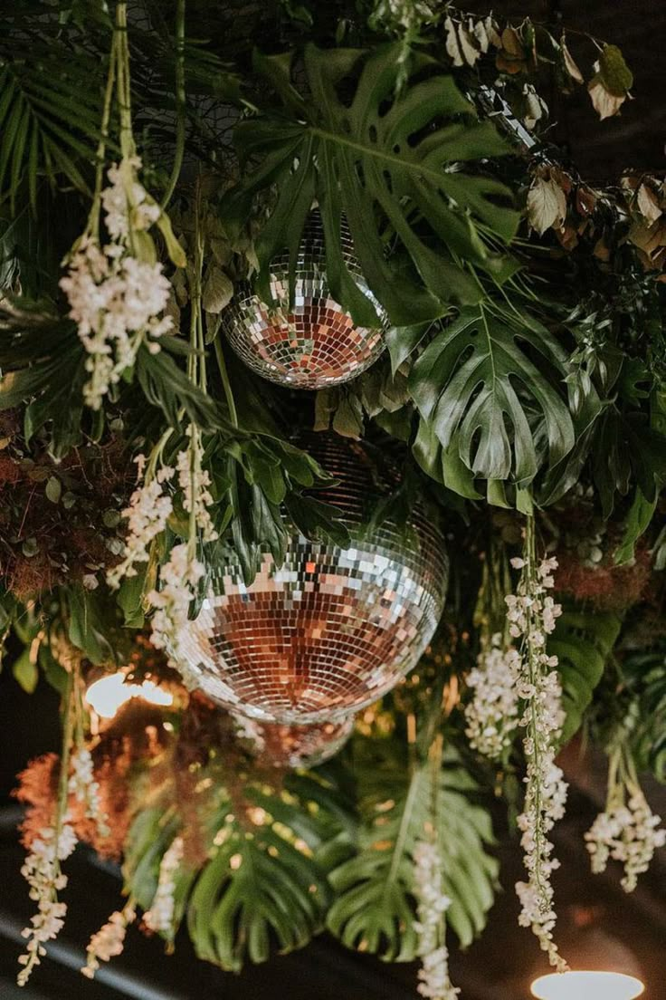
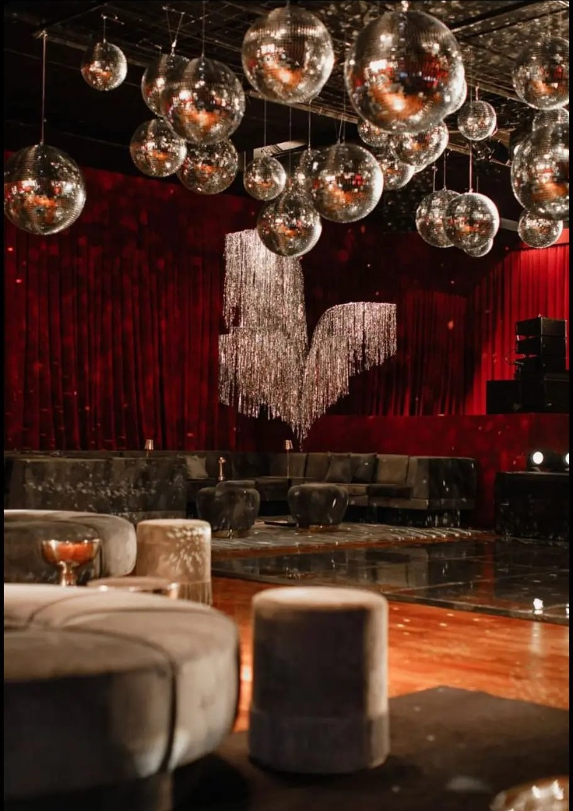
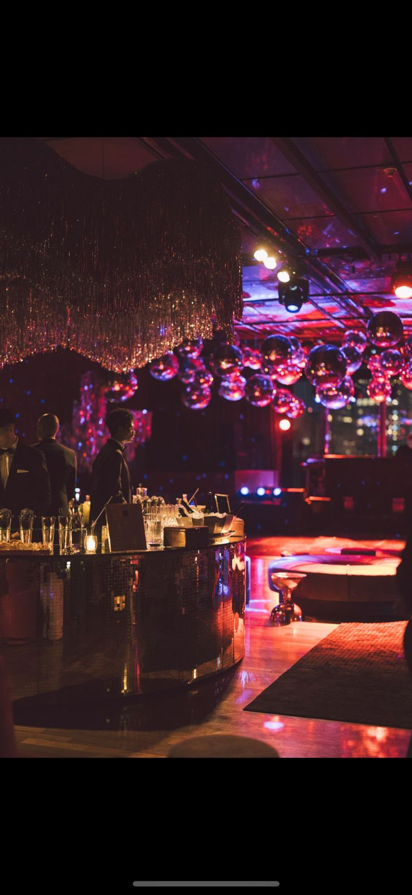
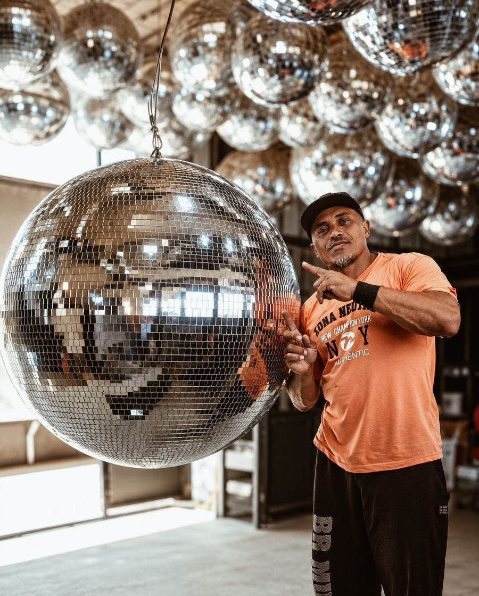
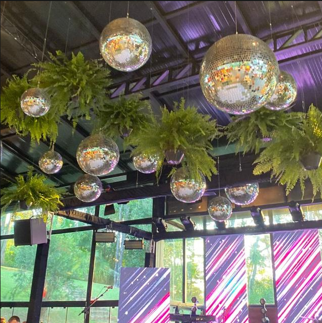

Sob Encomenda

Confecção Artesanal · São Paulo
Estruturas espelhadas sob medida e locação de globos espelhados para eventos de alto padrão. Um toque de brilho artesanal para casamentos, baladas e celebrações finas.
Serviços
Da escolha do espelho à montagem final, cada projeto é desenhado sob medida para a atmosfera do seu evento.

Sob Encomenda


Disponível para Aluguel
Eventos
De casamentos intimistas a grandes produções, nossas peças transformam o espaço através da luz refletida.
Globos espelhados para cerimônias e festas inesquecíveis

Recepção com iluminação cênica

Bar espelhado e instalação suspensa
Cenografia autoral para ativações e lançamentos de marca

O Ateliê
Esse é Wellington Ramos, fundador, artesão e o coração da WS. Desde 2012, ele transforma espelho, dedicação e talento em peças que iluminam festas, eventos e sonhos por todo o Brasil.
Cada globo espelhado é produzido com cuidado, precisão e a paixão de quem escolheu fazer da arte a sua profissão. Mais do que fabricar peças, Wellington construiu uma história baseada em qualidade, compromisso e amor pelo que faz.
"Cada globo nasce no ateliê com tempo, precisão e cuidado."— Wellington Ramos

Pronto para começar?
Conte-nos sobre seu projeto. Respondemos rapidamente com orçamento, prazos e referências de peças similares.
Falar no WhatsApp